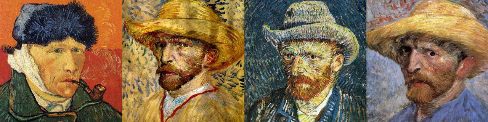

Resources

This page presents a selection of papers, textbooks, videos, and other resources that have shaped how we think about and conduct our research. While the list is not exhaustive, it is intended as a useful starting point for those who wish to explore or deepen their understanding of cognitive science (particularly computational modeling) and machine learning (particularly reinforcement learning).
Computational modeling of brain and behavior
Tutorials and textbooks:
- Ten simple rules for the computational modeling of behavioral data A must-read for anyone who wants to start working on computational modeling of brain and behavior
- Theoretical neuroscience: computational and mathematical modeling of neural systems
- Neuronal dynamics: from single neurons to networks and models of cognition
- Computational foundations of cognitive neuroscience
Example papers:
- Model-based influences on humans' choices and striatal prediction errors A classic example of a theory-guided experimental design to dissociate the predictions of different models
- Human inferences about sequences: a minimal transition probability model A neat example of Bayesian modeling of neural and behavioral data
- Reconciling novelty and complexity through a rational analysis of curiosity A great example of how normative modeling reconciles fragmented theories
- Using large-scale experiments and machine learning to discover theories of human decision-making An excellent example of using modern machine learning methods for modeling human behavior
- Computational models of episodic-like memory in food-caching birds A successful example of integrating and testing traditional theories via computational models
Reinforcement learning and optimal control
Tutorials and textbooks:
- Markov Decision Processes: Discrete Stochastic Dynamic Programming A math-heavy textbook to study the theoretical foundation of reinforcement learning
- Reinforcement Learning: An Introduction The go-to reinforcement learning textbook
- Algorithms for Reinforcement Learning A short textbook summarizing several key reinforcement learning algorithms along with their theoretical properties
Example papers:
- Near-Bayesian exploration in polynomial time A classic example of theoretically justified algorithm design for efficient exploration
- Unifying count-based exploration and intrinsic motivation An elegant example of translating theoretical ideas into deep reinforcement learning
- Learning to reinforcement learn The classic paper introducing meta reinforcement learning
- Diversity is all you need: learning skills without a reward function A great example of unsupervised, general-purpose skill-discovery
- Discovering and achieving goals via world models An excellent example of integrating several algorithmic modules for goal-conditioned reinforcement learning
My general go-to textbooks
- Elements of Information Theory This is among the most well-written textbooks I have ever seen!
- Information Theory, Inference and Learning Algorithms
- All of Statistics: A Concise Course in Statistical Inference It's pretty much exactly what its title claims!
- The Elements of Statistical Learning Deep learning and reinforcement learning aside, this can reasonably be regarded as a "complete" textbook on machine learning
- Bayesian Reasoning and Machine Learning This is particularly useful for probabilistic graphical models
- Computer Age Statistical Inference: Algorithms, Evidence, and Data Science I LOVE this book! Particularly, the first few chapters on Frequentist, Bayesian, and Fisherian approaches to statistics
Some general resources to become a better researcher
- To become better at presenting: “The Sense of Style” by Steven Pinker and “How to Speak” by Patrick Winston
- To become better at doing research: “You and Your Research” by Richard Hamming and “Advice for Young Investigators” by Sam Gershman
- To become better at understanding how science works: “The Structure of Scientific Revolutions” by Thomas Kuhn
A non-exhaustive list of other cool papers!
Neuroscience and psychology
- The role of the exploratory drive in learning
- The effect of stimulus sequence on the waveform of the cortical event-related potential
- Prospect theory: an analysis of decision under risk
- Statistical computations underlying the dynamics of memory updating
- Performance-optimized hierarchical models predict neural responses in higher visual cortex
- Diverse motives for human curiosity
- Pinpointing the neural signatures of single-exposure visual recognition memory
- A primate temporal cortex–zona incerta pathway for novelty seeking
- A prospective code for value in the serotonin system
- Emergent rate-based dynamics in duplicate-free populations of spiking neurons
Machine learning and statistics
- Learning to achieve goals
- Bayesian online changepoint detection
- An analysis of model-based interval estimation for Markov Decision Processes
- Intrinsically motivated reinforcement learning: an evolutionary perspective
- A distributional perspective on reinforcement learning
- C-Learning: learning to achieve goals via recursive classification
- Geometry of the loss landscape in overparameterized neural networks: symmetries and invariances
- Cross-validation: what does it estimate and how well does it do it?
- Learning to assist humans without inferring rewards
Other domains
- A triangular theory of love
- What might cognition be, if not computation?
- Doing better but feeling worse: looking for the “best” job undermines satisfaction
- The optimism bias
- Language left behind on social media exposes the emotional and cognitive costs of a romantic breakup
- Operationalism
- The effect of seeing scientists as intellectually humble on trust in scientists and their research
- Large teams develop and small teams disrupt science and technology